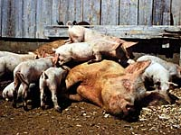

Pork production in Saskatchewan exists in two distinct phases. The first is farrowing, which involves the birth of a litter of piglets, and raising these piglets until they are weaned between 3-4 weeks of age. The second phase is finishing, which involves growth and development of the pig until it reaches a predetermined weight which corresponds to a certain carcass composition. Because these phases of production involve different feeding and housing systems, producers can specialize in one stage of production, or raise piglets to mature animals. There are three production systems used in Saskatchewan:
- Farrow to Wean
- requires the producer to maintain a breeding group of sows
- use of a farrowing barn or other confinement system for the birth and growth of a litter
- sell weaned pigs to a finishing operation when they reach a certain age or weight
- Finishing
- purchase groups of weaned pigs from a farrowing operation
- house pigs in groups and feed until they reach a weight at which time they are sold to a packing plant
- Farrow to Finish
- maintain a group of breeding sows, bred naturally or by artificial insemination
- use a farrowing barn for birth and raising of piglets for 3-4 weeks
- use a grower barn to raise groups of pigs to a desired weight for slaughter
- requires a great deal of management skill to be profitable
- reduces the risk of exposing pigs to disease or reduced growth rates because of shipping
|